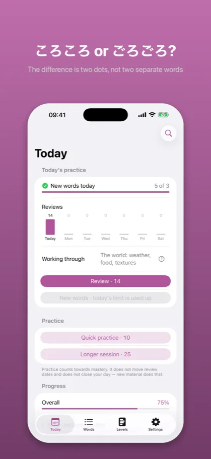
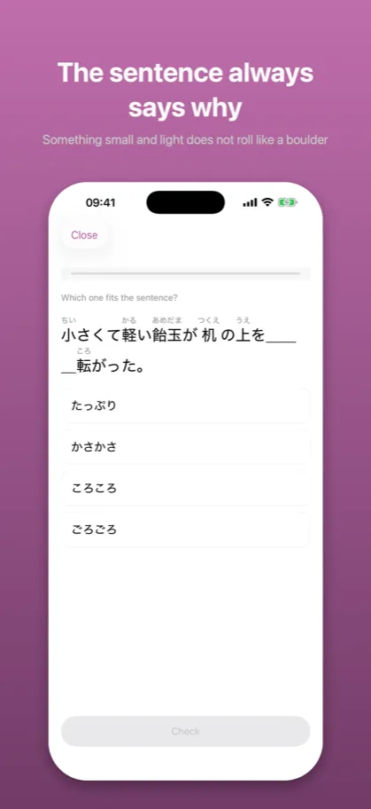
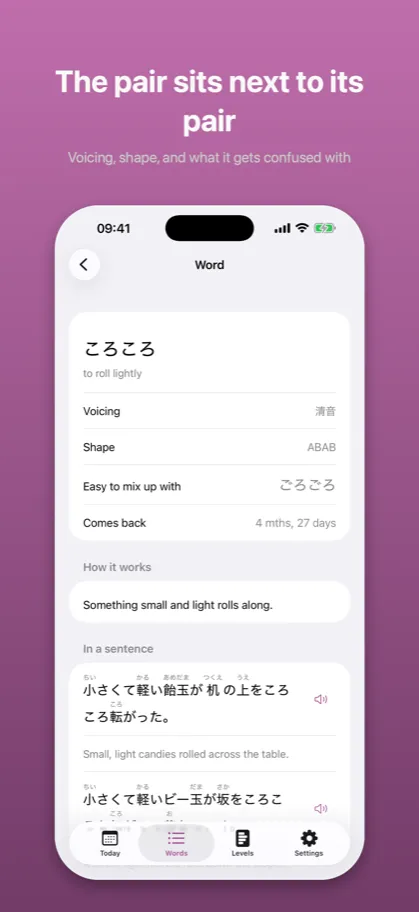

Onomatope: Japanese Mimeticsオノマトペ
Manga and anime vocabulary
Coming to the App Store
Waiting for Apple review. This page describes the version submitted.
Japanese onomatopoeia are not arbitrary. 濁点 makes a thing bigger, heavier and less pleasant – understand that and you can guess a word you have never seen.
What it looks like

The difference is two dots, not two separate words

Something small and light does not roll like a boulder

Voicing, shape, and what it gets confused with
Description from the store
Three hundred onomatopoeia are not a list to memorize. They are a system where the sound
carries the meaning – and that is what this app teaches.
Something small and light rolls ころころ. Something big and heavy rolls ごろごろ. The
difference is two dots, not two separate words. さらさら is smooth, ざらざら is rough.
ぱらぱら is light, ばらばら is scattered. Understand what 濁点 does and you can guess a word
you have never met – no dictionary gives you that.
FOUR THINGS, MEASURED SEPARATELY
Fit in a sentence. Which of four similar sounds this sentence asks for. The sentence always
says why – something small and light does not roll the way a boulder does.
Meaning. What the word says on its own. Always from the sound to the meaning, never the other
way round: without a sentence, four similar sounds have no single answer.
Shape and attachment. AっBり is sudden and finished, ABAB keeps going. And how the word enters
the sentence: 〜と, 〜する, 〜だ・の.
Sound rule. What 濁点 does to a word. Measured only on material that is not on the review
schedule, so it tells you whether you can guess a word you have never seen.
THE PAIR, NOT THE AVERAGE
The app does not say "ごろごろ 44%". It says: you put ごろごろ where ころころ belongs – but not
the other way round. With these words the direction of the mistake is the whole information,
and an average hides it.
FIVE LEVELS, NOT JLPT
Body and how you feel. Voiced pairs. The 〜り and 〜っと shapes. Feelings and people. The world:
weather, food, textures, manga. You hear ぺこぺこ on your first day in Japan and it is on no
N5 list – so the levels are practical, not exam-shaped. The first two are free in full.
WHAT COMES BACK, AND WHAT DOES NOT
Words come back on a schedule, because they are facts and facts fade: nothing in the sound of
ぐっすり tells you it is about sleep rather than mud. Rules do not come back that way – 濁点
works whether you were reminded of it or not. A rule is not forgotten, it is left unused, and
that shows up in your mistakes rather than on a calendar.
WHAT IS NOT HERE
No keyboard input: we measure the choice between four sounds, not your thumb. No question
about whether a word is written ドキドキ or どきどき – manga writes everything in katakana, so
that question has two right answers. No accounts, no ads, no subscription. No network: the
app runs entirely on your phone.
ONE PURCHASE
Levels 1 and 2 are free in full – not out of generosity but because a free version should be
shorter, not pretend. The rest is a single purchase, with nothing to renew.
The description above is the same text that stands on the App Store product page – it comes from the same file.
Common questions
What does Onomatope teach?
Three hundred onomatopoeia are not a list to memorize. They are a system where the sound
carries the meaning – and that is what this app teaches.
Something small and light rolls ころころ. Something big and heavy rolls ごろごろ. The
difference is two dots, not two separate words. さらさら is smooth, ざらざら is rough.
ぱらぱら is light, ばらばら is scattered. Understand what 濁点 does and you can guess a word
you have never met – no dictionary gives you that.
What does Onomatope cost?
Levels 1 and 2 are free in full – not out of generosity but because a free version should be
shorter, not pretend. The rest is a single purchase, with nothing to renew.
What does this app not do?
No keyboard input: we measure the choice between four sounds, not your thumb. No question
about whether a word is written ドキドキ or どきどき – manga writes everything in katakana, so
that question has two right answers. No accounts, no ads, no subscription. No network: the
app runs entirely on your phone.
Documents
The other apps
- Kaname: Japanese Grammar — JLPT practice: N5 N4 N3 N2 N1
- Bunmyaku: Japanese Reading — Vocabulary, kanji, furigana
- Katsuyokei: Conjugation — Verbs, adjectives and drills
- Joshi: Japanese Particles — Grammar drills for the JLPT
- Kazoekata: Japanese Counters — Counting, kanji and drills
- Kuzushi: Casual Japanese — Anime, drama and slang
- Shindan: Japanese Level Test — JLPT placement: N5 N4 N3 N2 N1
- Keigo: Polite Japanese — Formal Japanese for work
- Kifuku: Japanese Pitch Accent — Pronunciation and listening